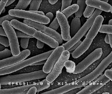

Bacteria (/bækˈtɪəriə/ ⓘ; sg.: bacterium) are ubiquitous, mostly free-living organisms often consisting of one biological cell. They constitute a large domain of prokaryotic microorganisms. Typically a few micrometres in length, bacteria were among the first life forms to appear on Earth, and are present in most of its habitats. Bacteria inhabit the air, soil, water, acidic hot springs, radioactive waste, and the deep biosphere of Earth's crust. Bacteria play a vital role in many stages of the nutrient cycle by recycling nutrients and the fixation of nitrogen from the atmosphere. The nutrient cycle includes the decomposition of dead bodies; bacteria are responsible for the putrefaction stage n this process. In the biological communities surrounding hydrothermal vents and cold seeps, extremophile bacteria provide the nutrients needed to sustain life by converting dissolved compounds, such as hydrogen sulphide and methane, to energy. Bacteria also live in mutualistic, commensal and parasitic relationships with plants and animals. Most bacteria have not been characterised and there are many species that cannot be grown in the laboratory. The study of bacteria is known as bacteriology, a branch of microbiology.
Bacteria display many cell morphologies and arrangements